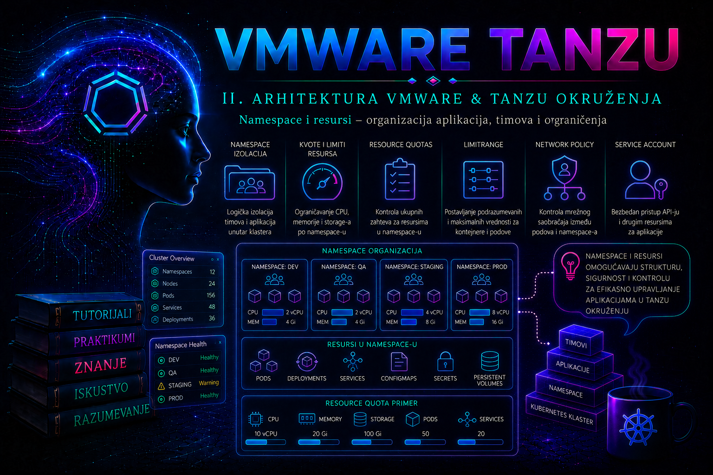

VMware & Tanzu

U Tanzu okruženju namespace predstavlja administrativnu granicu unutar koje se timovima dodeljuju resursi, dozvole i servisi potrebni za rad. Njegova vrednost nije samo u grupisanju Kubernetes objekata. Dobro projektovan namespace povezuje organizacionu strukturu preduzeća sa infrastrukturnim kapacitetom, bezbednosnim pravilima, storage politikama, životnim ciklusom aplikacija i odgovornošću za troškove.
Administrator zato namespace ne posmatra kao direktorijum u kojem se nalaze objekti, već kao kontrolisanu zonu potrošnje i upravljanja. U toj zoni mora biti jasno ko može da radi, koje resurse može da koristi, koliko ih može potrošiti, gde se podaci čuvaju, kako se aktivnosti nadziru i ko odobrava promene.
U VMware vSphere i Tanzu arhitekturi izraz namespace može označavati dva povezana, ali različita nivoa. Njihovo mešanje jedna je od najčešćih konceptualnih grešaka pri projektovanju platforme.
Verzijska napomena. U vSphere 8 dokumentaciji workload klasteri se često nazivaju Tanzu Kubernetes Grid Service ili TKG Service klasteri. U novijem VMware Cloud Foundation 9.x portfoliju aktuelan naziv je VMware vSphere Kubernetes Service (VKS), dok se platforma u delu dokumentacije naziva vSphere IaaS Control Plane. Koncept vSphere Namespace-a ostaje centralan, ali dostupne kartice, servisi, VM klase, mrežne mogućnosti i nazivi menija zavise od izdanja, licence i načina umrežavanja. Administrator zato postupak uvek usklađuje sa dokumentacijom tačno instalirane verzije, a ne samo sa terminologijom iz ranijeg izdanja.
vSphere Namespace i Kubernetes namespace nisu isti objekat
vSphere Namespace, koji se u različitim izdanjima dokumentacije i korisničkog interfejsa može pojaviti i kao Supervisor Namespace, kreira se na Supervisor-u i predstavlja infrastrukturnu granicu kojom upravlja vSphere administrator. Za njega se vezuju dozvole korisnika i grupa, storage politike, ograničenja CPU-a, memorije i skladišnog prostora, klase virtuelnih mašina, Content Library sadržaj i drugi servisi dostupni u konkretnom izdanju platforme.
Kubernetes namespace je standardni Kubernetes API objekat unutar određenog klastera. Njime se grupišu namespaced objekti kao što su Pod, Deployment, Service, ConfigMap, Secret, Role, RoleBinding, ResourceQuota i PersistentVolumeClaim. Kubernetes namespace ne može biti ugnježden u drugi namespace, a resurs može pripadati samo jednom namespace-u.
| Osobina | vSphere Namespace | Kubernetes namespace |
|---|---|---|
| Mesto postojanja | Supervisor i vCenter inventar | Kubernetes klaster |
| Primarni administrator | vSphere ili platform administrator | Cluster ili namespace administrator |
| Glavna svrha | Dodela infrastrukturnih kapaciteta, politika i pristupa | Logičko razdvajanje Kubernetes objekata i politika |
| Tipične kontrole | CPU, memorija, storage, VM klase, korisnici i servisi | RBAC, ResourceQuota, LimitRange, mrežne i admission politike |
| Opseg imena | Supervisor | Jedan Kubernetes klaster |
U tipičnom enterprise modelu platform tim kreira vSphere Namespace za projekat ili tim i u njemu omogućava kreiranje jednog ili više VKS workload klastera. Unutar svakog workload klastera aplikacioni timovi koriste standardne Kubernetes namespace-ove za razvojna, testna ili produkciona opterećenja. Tako nastaju dva nivoa kontrole: infrastrukturni nivo u vSphere-u i aplikacioni nivo u Kubernetes-u.
vSphere Namespace nije zamena za Kubernetes namespace, kao što ni Kubernetes ResourceQuota nije zamena za infrastrukturnu kontrolu kapaciteta u vCenter-u. Obe kontrole treba projektovati zajedno. Ako je kvota u Kubernetes-u velika, a vSphere Namespace nema dovoljno fizičkih ili virtuelnih resursa, workload neće moći da se rasporedi. Ako je vSphere kapacitet dovoljan, ali Kubernetes kvota stroga, API server će odbiti kreiranje objekta pre nego što scheduler pokuša njegovo raspoređivanje.
Namespace kao organizaciona i bezbednosna granica
Namespace se najčešće projektuje prema timu, aplikaciji, okruženju ili kombinaciji ovih kriterijuma. Nazivi kao što su retail-app-dev, retail-app-test i retail-app-prod neposredno pokazuju vlasnika, namenu i životni ciklus resursa. Nasuprot tome, generički nazivi poput team1, test ili new-project brzo postaju nejasni i otežavaju audit, obračun potrošnje i reagovanje na incidente.
Namespace je koristan kada više timova koristi isti klaster, kada je potrebno odvojiti razvoj od produkcije, kada se različitim aplikacijama dodeljuju različite kvote ili kada se pristup mora ograničiti na određenu grupu. Nije dovoljan kao jedina izolaciona granica za opterećenja sa izrazito različitim nivoima poverenja, regulatornim zahtevima ili rizikom. Kubernetes namespace sam po sebi ne obezbeđuje fizičku izolaciju node-ova, odvojenu kontrolnu ravan niti potpunu mrežnu izolaciju.
Za strogo regulisana ili međusobno nepoverljiva opterećenja administrator može zahtevati zaseban workload klaster, poseban vSphere Namespace, namenski resource pool, izdvojene mrežne segmente ili odvojene vCenter i Supervisor domene. Odluka zavisi od klasifikacije podataka, modela pretnji, zahteva za raspoloživost i odgovornosti organizacionih jedinica.
Kreiranje Kubernetes namespace-a samo po sebi ne blokira saobraćaj između Pod-ova. Za L3/L4 segmentaciju potrebne su NetworkPolicy kontrole i mrežni dodatak koji ih zaista sprovodi; prihvatanje NetworkPolicy objekta u API-ju nije dokaz da je saobraćaj filtriran. Pod Security, admission politike, upravljanje tajnama i kontrola image izvora takođe su zasebni slojevi. Ova lekcija ih postavlja kao projektantske zavisnosti, dok se njihove detaljne politike obrađuju u odgovarajućim narednim lekcijama.
Granice pristupa moraju se zasnivati na identitetskim grupama, a ne na pojedinačnim korisničkim nalozima, osim za privremeni i dokumentovani izuzetak. Grupa GG-TANZU-RETAIL-DEV, na primer, lakše se kontroliše i periodično recertifikuje od skupa direktnih dozvola dodeljenih pojedincima. Uklanjanje zaposlenog iz centralne grupe treba da ukine njegov pristup bez ručnog menjanja svakog namespace-a.
Model odgovornosti i izbor granice
| Odluka ili operacija | Primarni vlasnik | Dokaz kontrole | Rizik pogrešne podele |
|---|---|---|---|
| Kreiranje vSphere Namespace-a i dodela kapaciteta | VI/platform administrator | Odobren zahtev, vCenter Tasks/Events, stanje resource limita | Prevelika potrošnja ili nedovoljan kapacitet za oporavak |
| Dodela storage politika, VM klasa i namespace servisa | Platform i storage administrator | Lista dodeljenih politika i test dinamičkog provisioninga | Pogrešan placement, performanse ili zaštita podataka |
| Članstvo korisnika u identitetskoj grupi | IAM i vlasnik poslovne uloge | Odobrenje i periodična recertifikacija | Zastarela ili preširoka prava |
| Kubernetes RBAC, kvote i zaštitne politike | Cluster/platform administrator | Deklarativni manifesti, audit i kubectl auth can-i | Eskalacija privilegija ili uskraćivanje usluge |
| Requests, limits, broj replika i aplikacioni manifesti | Aplikacioni tim uz platform guardrails | Git revizija, load test, metrike i SLO | Pending, throttling, OOM ili rasipanje kapaciteta |
| Zadržavanje, backup i brisanje podataka | Vlasnik podataka uz platform/backup tim | RPO/RTO, uspešan restore test i odobrenje brisanja | Nepovratan gubitak ili regulatorni prekršaj |
Praktično pravilo je da jedan namespace ne treba da spaja resurse sa različitim vlasnicima, životnim ciklusima ili pravilima brisanja samo zato što pripadaju istoj organizacionoj jedinici. Obrnuto, nekontrolisano kreiranje velikog broja namespace-ova povećava RBAC, policy, monitoring i backup opterećenje. Granularnost mora biti dovoljno fina za odgovornost i izolaciju, ali dovoljno stabilna za automatizaciju i operativno održavanje.
Resursi, requests i limits
Kubernetes scheduler koristi zahtevane resurse, odnosno requests, pri izboru node-a na kojem Pod može da se izvršava. CPU request predstavlja količinu procesorskog vremena potrebnu za planiranje, dok memory request predstavlja memoriju koja se uzima u obzir pri raspoređivanju. Limit određuje gornju granicu korišćenja resursa kontejnera kada je takva kontrola podržana za dati resurs.
CPU je kompresibilan resurs. Kada kontejner pokuša da koristi više CPU-a od postavljenog limita, runtime može da ograniči njegovo procesorsko vreme. Memorija nije kompresibilna na isti način. Kada proces prekorači efektivno dostupnu memoriju, može biti prekinut i kontejner se često pojavljuje sa razlogom OOMKilled.
Request ne treba automatski izjednačiti sa prosečnom potrošnjom. On predstavlja kapacitet koji platforma mora moći da obezbedi za planiranje workload-a. Previsoki requests smanjuju iskorišćenost klastera i mogu ostaviti Pod u stanju Pending iako metrike pokazuju slobodan kapacitet. Preniski requests omogućavaju preveliku koncentraciju workload-a na node-u i povećavaju rizik od degradacije ili eviction događaja.
Za podešavanje vrednosti koriste se metrike iz reprezentativnog perioda, testovi opterećenja, zahtevi za odziv i tolerancija na vršna opterećenja. Razvojni namespace može imati skromnije granice, dok produkciona aplikacija zahteva kapacitet izračunat prema očekivanom saobraćaju, broju replika i strategiji oporavka nakon otkaza node-a.
ResourceQuota kao zbirna granica namespace-a
Objekat ResourceQuota ograničava zbirnu potrošnju resursa ili broj određenih Kubernetes objekata u jednom namespace-u. Može ograničiti ukupne CPU i memory requests, ukupne CPU i memory limits, broj Pod-ova, Services, Secrets, ConfigMaps, PersistentVolumeClaims i druge podržane resurse.
Kvota se proverava prilikom prijema zahteva u Kubernetes API. Kada bi novi objekat prekoračio dozvoljenu vrednost, API server odbija zahtev porukom Forbidden i navodi kvotu koja bi bila premašena. To nije scheduler problem i neće se rešiti čekanjem. Administrator mora smanjiti zahtev, osloboditi postojeće resurse ili kroz kontrolisani proces promeniti kvotu.
Ako kvota prati requests.cpu, requests.memory, limits.cpu ili limits.memory, svaki novi kontejner mora imati odgovarajuće vrednosti ili one moraju biti automatski dodeljene pomoću objekta LimitRange. U suprotnom kreiranje Pod-a može biti odbijeno jer sistem ne može izračunati njegov doprinos kvoti.
Kvota nije rezervacija fizičkog kapaciteta. Dodela kvote od 20 CPU jedinica namespace-u ne garantuje da workload klaster trenutno ima 20 slobodnih CPU jedinica niti da ih drugi namespace ne koristi. Kvota određuje dozvoljeni maksimum u Kubernetes API sloju. Stvarnu mogućnost izvršavanja određuju raspoloživi node-ovi, requests, taints, affinity pravila, storage i druge scheduling zavisnosti.
LimitRange kao pravilo za pojedinačne objekte
LimitRange definiše podrazumevane, minimalne i maksimalne vrednosti za pojedinačne kontejnere, Pod-ove ili PersistentVolumeClaims u namespace-u. Njime administrator može sprečiti kreiranje kontejnera bez granica, odbiti ekstremno velike zahteve i postaviti razumne podrazumevane vrednosti kada aplikacioni manifest ne sadrži resurse.
ResourceQuota i LimitRange rešavaju različite probleme. ResourceQuota kaže koliko namespace ukupno može potrošiti, dok LimitRange određuje šta jedan objekat sme da zahteva i koje će vrednosti dobiti ako ih autor manifesta nije naveo. U višekorisničkom klasteru najčešće se koriste zajedno.
Podrazumevane vrednosti nisu zamena za pravilno profilisanje aplikacije. Ako svaka aplikacija bez analize dobije isti CPU i memory limit, neke će nepotrebno rezervisati kapacitet, a druge će biti nestabilne. LimitRange treba da bude zaštitna ograda, dok vlasnik aplikacije i dalje odgovara za realne vrednosti u manifestu.
Storage politike i ograničenje trajnih podataka
Na nivou vSphere Namespace-a administrator određuje koje storage politike tim može da koristi. Te politike povezuju Kubernetes zahteve za trajnim volumenima sa karakteristikama vSphere skladišta, kao što su dostupnost, performanse, tip datastore-a i pravila zaštite podataka. Dostupnost određene StorageClass u workload klasteru zavisi od konfiguracije Supervisor-a, VKS klastera i CSI integracije.
U Kubernetes namespace-u storage se dodatno kontroliše kvotama. Moguće je ograničiti ukupan zahtevani kapacitet, broj PersistentVolumeClaim objekata i potrošnju povezanu sa određenom StorageClass. To sprečava da razvojni tim slučajno zahteva veliki broj volumena ili potroši kapacitet namenjen drugim aplikacijama.
Brisanje namespace-a može pokrenuti brisanje namespaced objekata, ali sudbina stvarnih podataka zavisi od PersistentVolume reclaim politike, storage integracije i procesa zaštite podataka. Administrator nikada ne sme pretpostaviti da je brisanje PVC-a bezopasno niti da je zadržavanje volumena automatski backup. Pre uklanjanja namespace-a moraju se proveriti poslovni vlasnik podataka, backup, snapshot ili aplikaciono konzistentan izvoz, kao i ponašanje StorageClass i PersistentVolume objekata.
Dozvole i podela odgovornosti
vSphere dozvole nad vSphere Namespace-om kontrolišu pristup infrastrukturnim funkcijama i načinu prijavljivanja na Supervisor. Kubernetes RBAC unutar workload klastera kontroliše operacije nad Kubernetes API resursima. Korisnik koji ima dozvolu da koristi vSphere Namespace ne mora automatski imati administratorska prava u svakom workload klasteru, a Kubernetes administrator aplikacionog namespace-a ne mora imati pravo da menja vSphere kvote ili storage politike.
Standardne Kubernetes uloge view, edit i admin mogu se povezati sa korisnicima ili grupama pomoću RoleBinding objekata. Uloga admin u namespace opsegu daje široka prava nad namespaced resursima, uključujući upravljanje većinom uloga i RoleBinding objekata, ali ne treba je dodeljivati automatski svakom članu razvojnog tima. Često je bezbednije da razvojni tim dobije edit, a upravljanje pristupom zadrži platform tim.
RoleBinding može da poveže namespaced Role ili ClusterRole sa subjektom samo u jednom namespace-u. ClusterRoleBinding daje prava u opsegu celog klastera i zato zahteva znatno strožu kontrolu. Greška kojom se umesto RoleBinding-a kreira ClusterRoleBinding može korisniku nenamerno omogućiti pristup svim namespace-ovima.
Životni ciklus i standard imenovanja
Svaki namespace treba da ima vlasnika, klasifikaciju okruženja, datum periodične provere, troškovni ili organizacioni identifikator i pravila zadržavanja. Kubernetes label-e su pogodne za mašinski čitljive podatke, dok anotacije mogu sadržati dodatne reference kao što su broj zahteva za promenu ili veza ka internom katalogu servisa.
Preporučeni naziv treba da bude stabilan i nezavisan od imena pojedinca. Primer retail-app-dev obuhvata poslovnu aplikaciju i okruženje. Promena tima ne zahteva preimenovanje svih objekata. Preimenovanje Kubernetes namespace-a nije standardna operacija; u praksi se kreira novi namespace, migriraju resursi i podaci, a zatim se stari kontrolisano uklanja.
Namespace-i kao što su kube-system, kube-public, kube-node-lease i default imaju posebnu ili sistemsku namenu. Aplikacione resurse ne treba postavljati u kube-system, dok korišćenje default namespace-a za produkcione aplikacije otežava kontrolu pristupa, kvota i vlasništva. Administrator treba da podesi eksplicitni namespace u manifestima i automatizaciji, umesto da zavisi od trenutnog kubectl konteksta.
Kako administrator proverava stanje
Provera počinje potvrdom identiteta klastera i aktivnog konteksta. Pogrešan kontekst može dovesti do promene u drugom klasteru, što je posebno opasno kada razvojno i produkciono okruženje imaju slične nazive objekata.
kubectl config current-context
kubectl cluster-info
kubectl auth whoami
kubectl get namespaces
kubectl get resourcequota,limitrange --all-namespacesSve navedene komande su read-only. Komanda kubectl auth whoami zavisi od podrške API servera i verzije klijenta; kada nije dostupna, identitet se potvrđuje načinom prijavljivanja i kontrolisanim kubectl auth can-i testom. Na vSphere sloju proveravaju se Workload Management, izabrani vSphere Namespace, kartice Summary, Permissions, Storage, Resource Limits, dostupne VM klase i servisi, kao i povezani Tasks i Events. Nazivi kartica mogu se razlikovati između vSphere 8 i VCF 9.x izdanja.
Normalno stanje podrazumeva da namespace ima očekivane oznake, da je u fazi Active, da potrošnja neprekidno ne dostiže kvotu, da nema velikog broja Pod-ova u stanju Pending ili sa čestim restartovanjem i da RoleBinding objekti odgovaraju odobrenom modelu pristupa.
Namespace u stanju Terminating nije nužno odmah problem. Brisanje može trajati dok kontroleri uklanjaju zavisne objekte i izvršavaju finalizere. Problem postoji kada stanje traje duže od dogovorenog operativnog praga, a događaji ili API objekti pokazuju nevažeći finalizer, nedostupan admission webhook, nedostupan API servis ili storage operaciju koja se ne završava. Prisilno uklanjanje finalizera je rizično jer može ostaviti spoljne resurse i podatke bez vlasnika.
Integrisani praktikum – kontrolisano razvojno okruženje za Retail tim
Poslovni i tehnički kontekst. Preduzeće uvodi novu aplikaciju za obradu maloprodajnih porudžbina. Platform tim je u Supervisor okruženju obezbedio vSphere Namespace ns-retail-dev, a u njemu VKS workload klaster vks-retail-dev. Razvojni tim treba da dobije sopstveni Kubernetes namespace, ograničen kapacitet i pravo da upravlja aplikacionim objektima bez administrativnih prava nad celim klasterom.
Cilj. Kreirati Kubernetes namespace retail-app-dev, označiti vlasništvo, primeniti ResourceQuota i LimitRange, dodeliti grupi GG-TANZU-RETAIL-DEV standardnu ulogu edit, proveriti dozvole i dokazati da se dozvoljeno opterećenje izvršava, a preveliki zahtev odbija.
Referentno okruženje. Supervisor sa vSphere Namespace-om ns-retail-dev; workload klaster vks-retail-dev; administratorska radna stanica sa instaliranim odgovarajućim vSphere Kubernetes CLI dodatkom i kubectl klijentom kompatibilnim sa klasterom; direktorijum ~/tanzu-lab/retail-app-dev.
Preduslovi i prava. Platform administrator mora prethodno potvrditi da vSphere Namespace ima dovoljno CPU-a, memorije i storage kapaciteta i da je workload klaster zdrav. Operator praktikuma mora imati pravo da kreira namespace, ResourceQuota, LimitRange i RoleBinding objekte u klasteru. Za redovan rad ta prava treba automatizovati kroz odobreni platform proces, a ne trajno dodeliti aplikacionom timu.
Vežba A – validacija infrastrukturne granice u vSphere Client-u. Prijaviti se nalogom sa minimalnim pravima za upravljanje namespace-om, otvoriti Workload Management, izabrati Supervisor pa ns-retail-dev. Ako namespace tek treba kreirati, koristiti opciju New Namespace, izabrati tačan Supervisor i uneti odobreno ime; ovo je state-changing postupak i mora imati zapis promene. Zatim na karticama za permissions, storage, capacity/resource limits, VM classes i dostupne servise proveriti sledeće:
- namespace pripada očekivanom Supervisor-u i nema konflikt vlasništva ili namene;
- CPU, memorijski i storage limiti odgovaraju kapacitivnom planu, uključujući rezervu za skaliranje i oporavak;
- dodeljene su samo odobrene storage politike, sa jasno poznatim placement-om, dostupnošću i klasom usluge;
- identitetske grupe imaju samo predviđenu namespace ulogu; pojedinačne dozvole su dokumentovani izuzeci;
- VKS servis, odgovarajuće VM klase i potrebni Supervisor servisi dostupni su samo ako su deo referentne arhitekture;
- Recent Tasks i Events ne sadrže neuspešnu rekonfiguraciju, authorization grešku ili alarm kapaciteta.
Očekivani rezultat i dokaz. Summary prikazuje zdrav i pravilno imenovan namespace; dozvole, storage i resursi odgovaraju odobrenom dizajnu; nema neuspelih zadataka. Snimaju se tekstualni izvoz ili kontrolisani snimci ekrana bez tokena i tajni. Ako je pronađena razlika, ne „popravlja” se naslepo: beleži se prethodno stanje, uticaj na postojeće workload-e i plan rollback-a, pa se tek nakon odobrenja menja jedna kontrola i proveravaju Tasks, Events i workload zdravlje.
Vežba B – Kubernetes granica unutar VKS klastera. Sledeći koraci kreiraju aplikacioni namespace i njegove zaštitne ograde. Komande koje počinju sa get, describe, cluster-info i auth can-i čitaju stanje; apply, run i delete menjaju stanje. Serverski dry-run ne čuva objekat, ali aktivira API validaciju i admission lanac, pa je obavezna kontrola pre stvarnog apply postupka.
-
Proveriti aktivni klaster i identitet.
Pre svake promene potvrđuje se da kubectl pokazuje na
vks-retail-dev. Naziv konteksta zavisi od načina prijavljivanja i ne mora biti identičan nazivu klastera, pa se proveravaju i API endpoint i dostupni node-ovi.
Validacija: API endpoint mora pripadati referentnom workload klasteru, svi očekivani node-ovi treba da budu u stanjukubectl config current-context kubectl cluster-info kubectl auth whoami kubectl get nodes -o wideReady, a identitet mora biti administratorski nalog odobren za ovu promenu. Ako identitet ili endpoint nisu očekivani, postupak se prekida pre kreiranja bilo kog objekta. -
Proveriti postojeće namespace-ove i konflikte imena.
Administrator potvrđuje da
retail-app-devveć ne postoji i pregleda postojeći obrazac imenovanja i označavanja.
Očekivani rezultat: prva komanda treba da vratikubectl get namespace retail-app-dev kubectl get namespaces --show-labelsNotFound. Ako namespace postoji, ne kreira se ponovo. Pregledaju se vlasnik, postojeće kvote, dozvole i razlog njegovog postojanja. -
Kreirati radni direktorijum i manifest namespace-a.
Svi objekti biće sačuvani kao deklarativni fajlovi radi revizije, ponovljivosti i kasnijeg GitOps upravljanja.
Objašnjenje: serverski dry-run šalje manifest API serveru radi validacije, ali ne čuva objekat. Time se proveravaju sintaksa, API pravila i admission politike. Tek nakon uspešne validacije izvršava se stvarnimkdir -p ~/tanzu-lab/retail-app-dev cd ~/tanzu-lab/retail-app-dev cat > 01-namespace.yaml <<'EOF' apiVersion: v1 kind: Namespace metadata: name: retail-app-dev labels: app.kubernetes.io/part-of: retail-platform environment: dev owner: retail-team cost-center: cc-4100 annotations: platform.example.com/change-record: CHG-2026-0710 platform.example.com/contact: retail-platform-team EOF kubectl apply --dry-run=server -f 01-namespace.yaml kubectl apply -f 01-namespace.yamlapply. Validacija:
Očekuje se fazakubectl get namespace retail-app-dev --show-labels kubectl get namespace retail-app-dev -o jsonpath='{.status.phase}{"\n"}'Activei prisustvo svih definisanih labela. -
Definisati podrazumevane i maksimalne resurse kontejnera.
LimitRange će kontejneru bez eksplicitnih vrednosti dodeliti request od 100 millicpu i 128 MiB memorije, odnosno limit od 500 millicpu i 512 MiB. Jedan kontejner ne može zahtevati više od 2 CPU jedinice i 2 GiB memorije.
Validacija: izlaz mora prikazati minimalne, maksimalne i podrazumevane vrednosti tačno prema manifestu. Ako admission politika organizacije zahteva drugačije granice, manifest se usklađuje sa odobrenim standardom umesto zaobilaženja kontrole.cat > 02-limit-range.yaml <<'EOF' apiVersion: v1 kind: LimitRange metadata: name: retail-container-limits namespace: retail-app-dev spec: limits: - type: Container defaultRequest: cpu: 100m memory: 128Mi default: cpu: 500m memory: 512Mi min: cpu: 25m memory: 32Mi max: cpu: "2" memory: 2Gi EOF kubectl apply --dry-run=server -f 02-limit-range.yaml kubectl apply -f 02-limit-range.yaml kubectl describe limitrange retail-container-limits -n retail-app-dev -
Postaviti zbirnu kvotu namespace-a.
Razvojnom okruženju dodeljuje se do 4 CPU jedinice u requests, 8 CPU jedinica u limits, 8 GiB zahtevanog i 16 GiB limitiranog memorijskog kapaciteta. Ograničava se i broj osnovnih objekata kako greška u automatizaciji ne bi nekontrolisano kreirala resurse.
Validacija: kolonacat > 03-resource-quota.yaml <<'EOF' apiVersion: v1 kind: ResourceQuota metadata: name: retail-dev-quota namespace: retail-app-dev spec: hard: requests.cpu: "4" requests.memory: 8Gi limits.cpu: "8" limits.memory: 16Gi pods: "20" services: "10" persistentvolumeclaims: "5" requests.storage: 200Gi secrets: "30" configmaps: "30" EOF kubectl apply --dry-run=server -f 03-resource-quota.yaml kubectl apply -f 03-resource-quota.yaml kubectl describe resourcequota retail-dev-quota -n retail-app-devHardmora prikazati zadate granice, dok ćeUsedneposredno nakon kreiranja uglavnom biti nula. Kvota skladišta ograničava zbir zahteva, ali ne zamenjuje proveru fizičkog kapaciteta datastore-a. -
Dodeliti razvojnoj grupi namespaced pristup.
Grupa dobija standardnu ClusterRole
editsamo u namespace-uretail-app-dev. Ne koristi se ClusterRoleBinding jer bi prava važila šire od potrebnog opsega.
Validacija dozvola:cat > 04-role-binding.yaml <<'EOF' apiVersion: rbac.authorization.k8s.io/v1 kind: RoleBinding metadata: name: retail-developers-edit namespace: retail-app-dev subjects: - kind: Group name: GG-TANZU-RETAIL-DEV apiGroup: rbac.authorization.k8s.io roleRef: kind: ClusterRole name: edit apiGroup: rbac.authorization.k8s.io EOF kubectl apply --dry-run=server -f 04-role-binding.yaml kubectl apply -f 04-role-binding.yaml kubectl get rolebinding retail-developers-edit -n retail-app-dev -o yaml
Prva provera treba da vratikubectl auth can-i create deployments \ --namespace retail-app-dev \ --as=retail-test-user \ --as-group=GG-TANZU-RETAIL-DEV kubectl auth can-i delete namespaces \ --as=retail-test-user \ --as-group=GG-TANZU-RETAIL-DEV kubectl auth can-i create deployments \ --namespace kube-system \ --as=retail-test-user \ --as-group=GG-TANZU-RETAIL-DEVyes, a druge dveno. Impersonacija pomoću--asi--as-groupzahteva posebna prava; ako ih operator nema, validacija se radi kontrolisanim prijavljivanjem testnog korisnika iz grupe. -
Implementirati dozvoljeno testno opterećenje.
Koristi se mali Deployment sa dve replike i eksplicitnim resursima. Primer služi proveri namespace politika, a ne predstavlja konačnu produkcionu konfiguraciju aplikacije.
Validacija:cat > 05-demo-deployment.yaml <<'EOF' apiVersion: apps/v1 kind: Deployment metadata: name: retail-web namespace: retail-app-dev labels: app: retail-web spec: replicas: 2 selector: matchLabels: app: retail-web template: metadata: labels: app: retail-web spec: containers: - name: web image: registry.k8s.io/e2e-test-images/agnhost:2.53 args: - netexec - --http-port=8080 ports: - name: http containerPort: 8080 resources: requests: cpu: 100m memory: 128Mi limits: cpu: 300m memory: 256Mi --- apiVersion: v1 kind: Service metadata: name: retail-web namespace: retail-app-dev spec: selector: app: retail-web ports: - name: http port: 80 targetPort: 8080 EOF kubectl apply --dry-run=server -f 05-demo-deployment.yaml kubectl apply -f 05-demo-deployment.yaml kubectl rollout status deployment/retail-web -n retail-app-dev --timeout=180s
Deployment treba da ima dve dostupne replike, oba Pod-a treba da budukubectl get deployment,pods,service -n retail-app-dev -o wide kubectl describe resourcequota retail-dev-quota -n retail-app-dev kubectl get events -n retail-app-dev --sort-by=.metadata.creationTimestampRunningiReady, a kvota treba da pokaže potrošnju od 200m CPU requests i 256Mi memory requests, uz odgovarajuće limite. Manje razlike mogu postojati ako admission kontrola dodaje sidecar kontejnere. -
Izvršiti funkcionalnu proveru servisa.
Privremeni Pod pokreće se u istom namespace-u i pristupa Service DNS imenu. Opcija
--rmuklanja testni Pod po završetku.
Očekivani rezultat: komanda treba da vrati ime jednog od Pod-ova iza Service objekta. Time se potvrđuju DNS rezolucija, Service selektor, endpoint registracija i komunikacija unutar namespace-a.kubectl run retail-client \ --namespace retail-app-dev \ --image=busybox:1.36.1 \ --restart=Never \ --rm -i \ --command -- /bin/sh -c \ 'wget -qO- http://retail-web/hostname' -
Izvršiti negativni test maksimalnog limita.
Manifest namerno zahteva 3 CPU jedinice za jedan kontejner, što prelazi maksimalnu vrednost od 2 definisanu u LimitRange objektu.
Očekivani rezultat: API server treba da odbije zahtev porukom koja pokazuje da maksimalni dozvoljeni CPU iznosi 2. Pod ne sme postojati.cat > 06-negative-test.yaml <<'EOF' apiVersion: v1 kind: Pod metadata: name: oversized-pod namespace: retail-app-dev spec: containers: - name: test image: registry.k8s.io/pause:3.10 resources: requests: cpu: "3" memory: 128Mi limits: cpu: "3" memory: 256Mi EOF kubectl apply -f 06-negative-test.yaml
Očekuje sekubectl get pod oversized-pod -n retail-app-devNotFound. Ako je Pod kreiran, proveravaju se aktivni LimitRange, namespace u manifestu i eventualna razlika u admission konfiguraciji klastera. -
Proveriti relevantne događaje i tragove dijagnostike.
Greške kvote i LimitRange kontrole najčešće su vraćene direktno klijentu kao odgovor API servera i ne moraju proizvesti klasičan Pod događaj jer objekat nije ni sačuvan. Za prihvaćene objekte proveravaju se namespace događaji, opisi Pod-ova i status workload kontrolera.
Na Supervisor i vCenter nivou platform administrator dodatno proverava Recent Tasks, Events, stanje Supervisor-a, vSphere Namespace kapacitet i health prikaze workload klastera. Za dublju analizu API i kontrolne ravni koriste se podržani vCenter i Supervisor log paketi i Broadcom postupci za prikupljanje support bundle-a. Ručno menjanje sistemskih komponenti ili direktno uređivanje njihovih podataka nije prihvatljiv troubleshooting postupak.kubectl get events -n retail-app-dev \ --sort-by=.metadata.creationTimestamp kubectl describe deployment retail-web -n retail-app-dev kubectl describe pods -n retail-app-dev kubectl get resourcequota,limitrange,rolebinding -n retail-app-dev -
Dokumentovati prihvatanje promene.
U zapisu
CHG-2026-0710čuvaju se verzije manifesta, rezultat dry-run provera, aktivni kubectl kontekst, izlaz RBAC provera, stanje kvote i rezultat funkcionalnog testa. Tajne, kubeconfig sadržaj i pristupni tokeni ne smeju se unositi u zapis promene.
Merljivi kriterijumi prihvatanja: namespace jekubectl get namespace retail-app-dev -o yaml kubectl get resourcequota,limitrange,rolebinding \ -n retail-app-dev -o yaml kubectl get deployment,pods,service \ -n retail-app-dev -o wideActive; dve replike Deployment-a su dostupne; Service ima endpoint-e; interni HTTP test uspeva; razvojna grupa može da kreira Deployment samo u odobrenom namespace-u; ne može da briše namespace niti da menjakube-system; zahtev iz negativnog testa je odbijen; potrošnja kvote je vidljiva i ispod granica.
Tipične greške i njihovo razlikovanje
- Zahtev je odbijen sa
exceeded quota. Objekat nije kreiran jer bi zbirna potrošnja prekoračila ResourceQuota. Proveravaju sekubectl describe resourcequota, postojeći workload-i i stvarna potreba za povećanjem kvote. - Zahtev je odbijen zbog LimitRange pravila. Pojedinačni kontejner ili PVC zahteva vrednost izvan dozvoljenog minimuma ili maksimuma. Greška se pojavljuje odmah pri kreiranju i razlikuje se od nedostatka kapaciteta node-a.
- Pod je
Pendingiako je ispod kvote. Kvota dozvoljava objekat, ali scheduler ne nalazi odgovarajući node zbog nedovoljnog kapaciteta, taint-a, affinity pravila, nedostupnog volumena ili drugog scheduling uslova. Razlog se vidi ukubectl describe pod. - Pod je
OOMKilled. Memory limit ili raspoloživa memorija nisu dovoljni za ponašanje procesa. Pregledaju se prethodni status kontejnera, restart count, aplikacioni logovi i metrike, a limit se ne povećava bez analize curenja memorije i realne potrošnje. - Korisnik dobija
Forbidden. Proverava se stvarni identitet, članstvo u grupi, RoleBinding subject, roleRef i tačan namespace. Problem identiteta ne rešava se dodelomcluster-adminuloge. - Namespace ostaje u stanju
Terminating. Pregledaju se preostali objekti, finalizer-i, API servisi, admission webhook-i i storage resursi. Finalizer se ne uklanja prisilno dok nije utvrđeno koji kontroler treba da završi čišćenje i kakve bi spoljne resurse intervencija ostavila.
Dijagnostika se vodi od najmanje invazivne provere ka promeni stanja. Sledeće mapiranje sprečava da se simptom proglasi osnovnim uzrokom:
| Simptom i obim | Neposredni uzrok | Osnovni uzrok koji treba potvrditi | Privremena mera | Trajna korekcija i validacija |
|---|---|---|---|---|
Samo novi Pod-ovi jednog namespace-a dobijaju exceeded quota | Admission odbija prekoračenje hard granice | Neplanirano skaliranje, napušteni objekti ili pogrešna procena kapaciteta | Zaustaviti novi rollout ili bezbedno smanjiti nepotrebne replike | Profilisati workload, odobriti novu kvotu ili optimizovati resurse; ponoviti dry-run i proveriti Used/Hard |
Pod je prihvaćen, ali ostaje Pending | Scheduler ne nalazi odgovarajući node ili volume | Nedovoljan allocatable kapacitet, taint/affinity konflikt, topologija ili storage zavisnost | Vratiti rollout na prethodnu veličinu ako SLO trpi | Ispraviti requests/topologiju ili planski povećati kapacitet; dokazati scheduling i stabilnost replika |
Jedna grupa dobija Forbidden u očekivanom namespace-u | Efektivni RBAC ne dozvoljava glagol nad resursom | Pogrešno grupno članstvo, subject/roleRef ili zastareo login token | Koristiti odobren break-glass samo ako incident zahteva i sve se audituje | Ispraviti identitetsku grupu ili namespaced binding, ponovo se prijaviti i dokazati dozvoljene i zabranjene operacije |
Namespace dugo ostaje Terminating | Finalizer ili discovery/admission zavisnost ne završava čišćenje | Nedostupan kontroler, APIService, webhook, CSI ili spoljni resurs | Zaustaviti nova brisanja i zaštititi podatke; ne uklanjati finalizer naslepo | Oporaviti vlasnički kontroler ili podržano očistiti resurs; potvrditi odsustvo orphan objekata i zatvoriti incident |
Za svaki incident beleže se vreme prvog simptoma, pogođeni namespace-i i workload-i, poslednja promena, tačan API odgovor, relevantni Events i stanje vCenter Tasks/Events. Tek zatim se postavlja hipoteza. Privremena mera mora ograničiti uticaj bez proširenja privilegija ili rizika po podatke, a incident se zatvara tek kada je potvrđen oporavak i uklonjen osnovni uzrok.
Rollback i cleanup
Najbezbedniji rollback promene kvote, LimitRange ili RoleBinding objekta jeste ponovno primenjivanje prethodno odobrene verzije manifesta iz sistema za kontrolu verzija. Brisanje celog namespace-a nije prihvatljiv rollback za grešku u jednoj politici jer uklanja sve namespaced resurse i može pokrenuti brisanje aplikacionih podataka.
Za uklanjanje samo demonstracionog workload-a koriste se sačuvani manifesti:
cd ~/tanzu-lab/retail-app-dev
kubectl delete -f 05-demo-deployment.yaml
kubectl get all -n retail-app-devNegativni test obično nije kreirao objekat, ali se cleanup može izvršiti bez greške:
kubectl delete -f 06-negative-test.yaml --ignore-not-foundUpozorenje: sledeća operacija briše namespace i sve namespaced objekte u njemu. Ne izvršava se u produkciji niti nad namespace-om sa trajnim podacima bez odobrenog zahteva, potvrđenog backup-a, pregleda PersistentVolume reclaim politika i saglasnosti vlasnika aplikacije.
kubectl delete namespace retail-app-devPre potpunog uklanjanja proveravaju se PVC i PV objekti, backup evidencija, eksterni DNS zapisi, load balancer resursi, sertifikati, cloud ili NSX objekti i integracije koje možda nisu automatski uklonjene. Uspešan cleanup podrazumeva da namespace više ne postoji, da nema napuštenih volumena ili mrežnih resursa i da je promena zatvorena u evidenciji.
Administratorske prakse
- Praćenje potrošnje kvota. Najmanje dnevno i nakon većeg deployment-a proveravaju se
kubectl describe resourcequotai platformske metrike. Reakcija je potrebna kada stabilna potrošnja pređe približno 80% granice ili kada rast odstupa od plana. Prvo se utvrđuje koji workload troši resurse, a zatim se optimizuje aplikacija ili pokreće odobren zahtev za kapacitet. Trend, uzrok i odluka beleže se u monitoring ili capacity-management sistemu. Uspeh se meri odsustvom neplaniranih odbijanja i tačnošću prognoze kapaciteta. - Kontrola Pod-ova bez eksplicitnih resursa. Nakon svakog uvođenja aplikacije i periodično kroz policy alat proveravaju se manifestski requests i limits.
kubectl get pods -n retail-app-dev -o yamlpokazuje efektivne vrednosti, ali se izvorni Git manifest mora posebno pregledati kako bi se razlikovale autorske od automatski dodatih vrednosti. Prva reakcija je zahtev vlasniku aplikacije da profilisanjem potvrdi odgovarajuće resurse. - Recertifikacija pristupa. Najmanje kvartalno i nakon organizacione promene porede se RoleBinding i ClusterRoleBinding objekti sa centralnim grupama i odobrenjima. Komande
kubectl get rolebindings -A,kubectl get clusterrolebindingsikubectl auth can-ikoriste se za proveru. Svako direktno korisničko pravo, nepoznata grupa ili neočekivani cluster-wide pristup zahteva istragu. Rezultati se čuvaju u IAM ili GRC evidenciji, a uspeh se meri brojem uklonjenih zastarelih prava i odsustvom neodobrenih privilegija. - Provera namespace-a bez vlasnika. Nedeljno ili kroz automatizovani inventar proveravaju se obavezne labele i anotacije. Namespace bez
owner,environmentili internog identifikatora promene označava se kao neusaglašen. Prva reakcija je identifikovanje workload vlasnika pre bilo kakvog brisanja. Nalaz se evidentira u CMDB ili katalogu platformskih resursa. - Praćenje
Pending, eviction i OOM događaja. Monitoring treba da alarmira na dugotrajnoPendingstanje, rast restart count vrednosti,OOMKilledi node memory ili disk pressure. Administrator prvo proverava događaje, Pod status, node kapacitet i aplikacione metrike. Uspeh se meri vremenom detekcije i oporavka, kao i smanjenjem ponovljenih incidenata sa istim uzrokom. - Zaštita konfiguracije i podataka. Namespace YAML manifesti, RBAC, kvote, politike i aplikacione definicije čuvaju se u kontroli verzija pri svakoj odobrenoj promeni. Kubernetes backup rešenje mora čuvati potrebne API objekte i, kada je podržano, povezane volume podatke u izdvojenom i zaštićenom repozitorijumu. Raspored zavisi od RPO zahteva, a restore test se izvodi najmanje kvartalno u izolovanom okruženju. Backup je upotrebljiv tek kada se objekti obnove, aplikacija pokrene, podaci provere aplikacionim testom i rezultat dokumentuje.
- Kontrola promena vSphere Namespace-a. Promene CPU-a, memorije, storage politika, VM klasa i dozvola proveravaju se pre i posle izvršenja u vSphere Client-u, kroz Tasks, Events i odgovarajuće API ili automatizacione izveštaje. Svaka promena mora imati poslovni razlog, vlasnika, prethodno stanje i plan povratka. Uspeh se meri time da workload-i ostanu raspoloživi i da nova politika daje tačno odobreni kapacitet.
Završna kontrolna lista
- Aktivni kubectl kontekst i API endpoint potvrđeni su kao
vks-retail-dev. - Namespace
retail-app-devje u faziActivei sadrži obavezne labele vlasnika, okruženja i troškovnog centra. kubectl describe limitrange retail-container-limits -n retail-app-devprikazuje odobrene minimalne, maksimalne i podrazumevane vrednosti.kubectl describe resourcequota retail-dev-quota -n retail-app-devprikazuje odobrene granice i potrošnju ispod njih.- RoleBinding povezuje grupu
GG-TANZU-RETAIL-DEVsa ulogomeditsamo u namespace-uretail-app-dev. - RBAC test potvrđuje da razvojna grupa može da kreira Deployment u svom namespace-u, ali ne može da briše namespace niti menja
kube-system. - Deployment
retail-webima dve dostupne replike, a svi pripadajući Pod-ovi suReady. - Funkcionalni test prema
http://retail-web/hostnamevraća odgovor aplikacionog Pod-a. - Negativni test sa zahtevom od 3 CPU jedinice odbijen je LimitRange pravilom i objekat
oversized-podne postoji. - Manifesti, validacioni izlazi i rezultat promene sačuvani su u odobrenoj evidenciji bez kubeconfig sadržaja, tokena ili drugih tajni.
Zaključak
Administrator nakon ove lekcije treba da razlikuje vSphere Namespace kao infrastrukturnu granicu Supervisor okruženja od standardnog Kubernetes namespace-a unutar workload klastera. Mora razumeti da nijedan od ta dva nivoa samostalno ne rešava sve zahteve za izolaciju, kapacitet i bezbednost. Pouzdano enterprise rešenje nastaje kombinovanjem vSphere dozvola i infrastrukturnih politika sa Kubernetes RBAC, ResourceQuota, LimitRange, storage i drugim aplikacionim kontrolama.
Praktična veština nije samo kreiranje namespace-a, već projektovanje njegovog vlasništva, kapaciteta i životnog ciklusa. Administrator mora umeti da validira manifest pre promene, proveri efektivne dozvole, razlikuje odbijanje kvote od scheduling problema, prepozna OOM i kapacitivne simptome, bezbedno vrati prethodnu politiku i dokumentuje dokaz da promena radi kako je odobreno.
Produkcioni rizici nastaju kada se namespace tretira kao potpuna bezbednosna izolacija, kada se široka prava dodeljuju preko ClusterRoleBinding objekata, kada kvote nisu zasnovane na merenju, kada se storage briše bez provere reclaim politike ili kada se finalizer uklanja bez razumevanja spoljnog resursa koji štiti. Granica administratorskog ovlašćenja zato mora biti jasna: aplikacioni tim upravlja svojim workload-om, platform tim infrastrukturnim politikama, bezbednosni tim pravilima pristupa, a vlasnik podataka odlučuje o njihovom zadržavanju i uklanjanju.
Eskalacija je potrebna kada problem zahteva promenu Supervisor kontrolne ravni, vCenter ili NSX konfiguracije, kada postoji sumnja na grešku CSI ili API integracije, kada namespace ostaje u stanju Terminating zbog nedostupnog sistemskog kontrolera, kada su ugroženi trajni podaci ili kada tražena promena prevazilazi odobreni kapacitet i bezbednosni model. Odgovoran administrator ne zaobilazi zaštitne mehanizme da bi privremeno uklonio simptom, već prikuplja dokaze, ograničava uticaj i uključuje vlasnika odgovarajućeg sloja platforme.